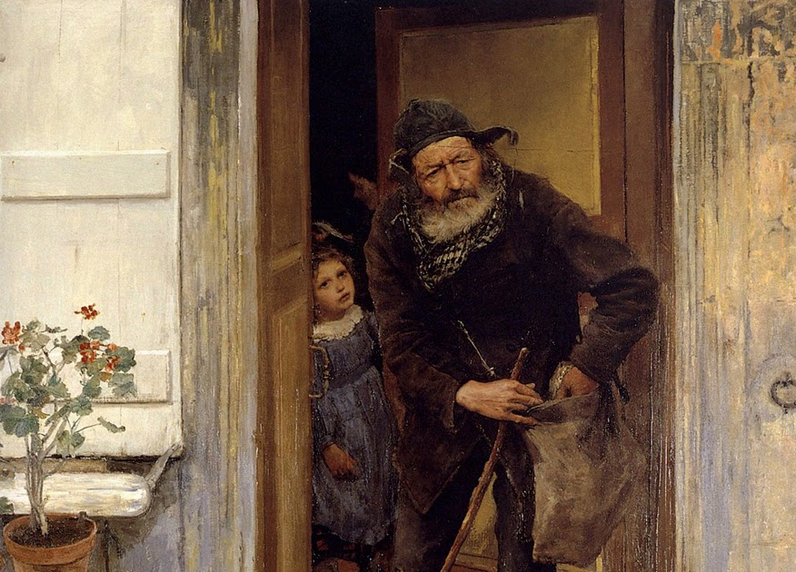
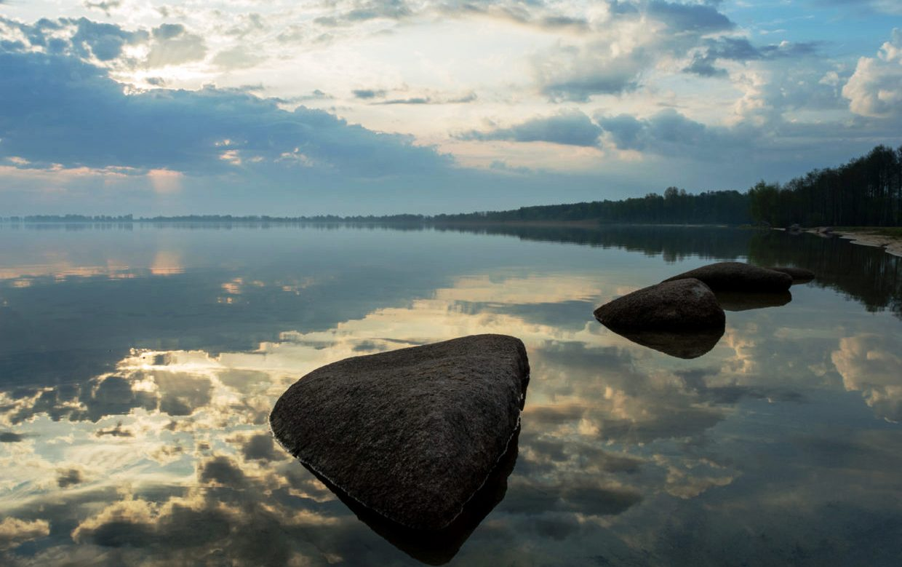
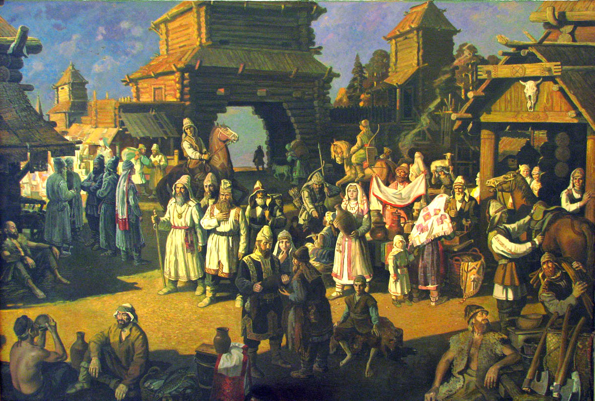
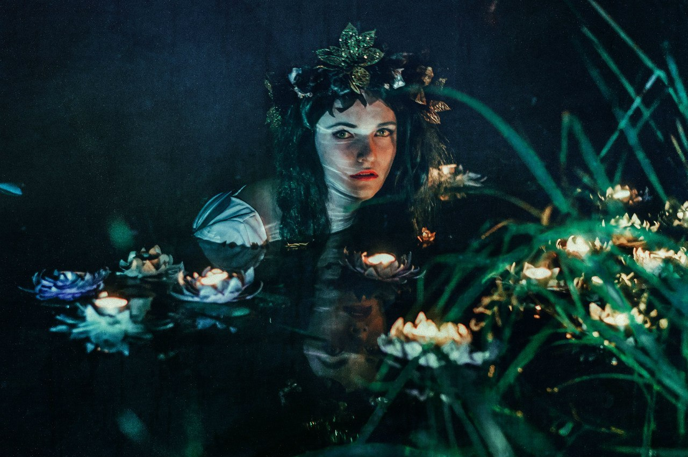
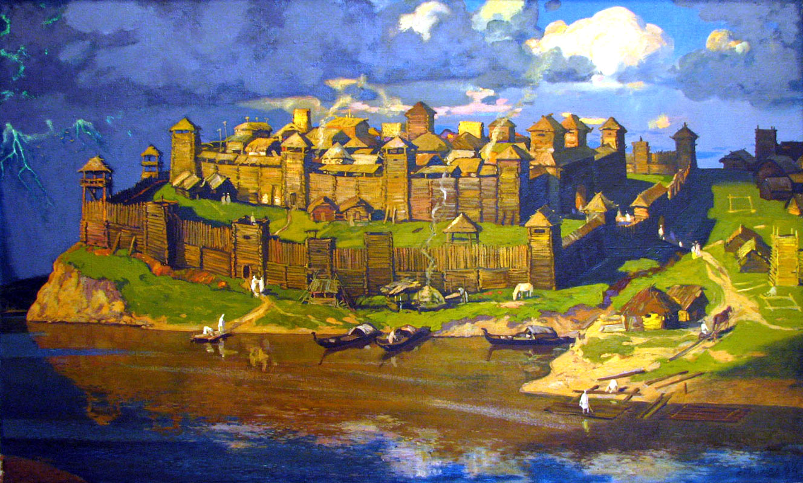
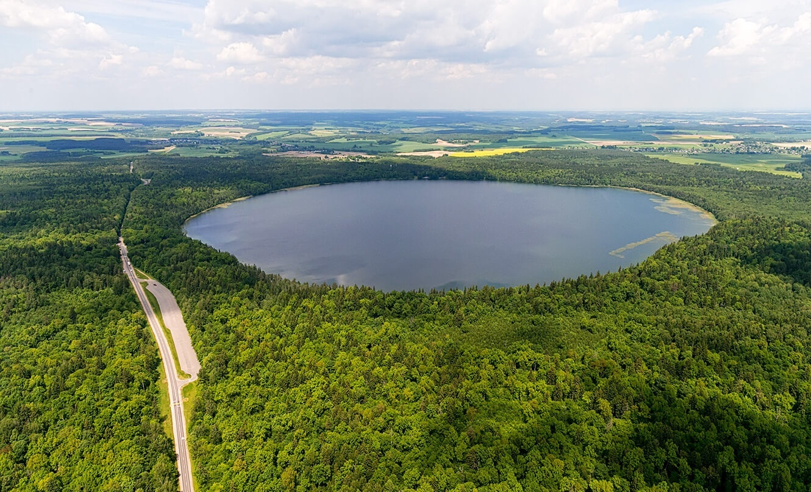

ЛЕГЕНДЫ
Озеро Свитязь.
Тайна затонувшего города
Легенда первая: про жабрака и добрую вдову
Сам город, как гласят легенды, был достаточно красочен и богат, но отличался уж больно суровыми правилами: нельзя им было принимать чужих.
Даже за окраинами города нищие знали об этих особенностях и не заходили сюда. Они прекрасно знали, что если даже попробуют зайти к кому-нибудь, то может случиться с ними беда: хорошо, если просто прогонят, а могут и собак на них спустить или вовсе убить. Однажды в город зашёл дряхлый жабрак, бедняк. Как только жители увидели неизвестного, стали плотнее закрывать двери и окна, чтоб он даже и не думал просить подаяние и прибежище. Но жабрак не знал о местных нравах, он верил, что хоть одна добрая душа найдется в столь негостеприимном городе.
Пройдясь по главным улицам старик дошёл аж до самой окраины. Но и там все закрывали перед его носам двери, никто не проявлял сострадание нищему. И когда уже совсем потемнело одна вдова впустила в свою лачугу, что находилась у самой городской стены. Но у неё и самой не было что предложить, кроме как холодное место у печки, где по вечерам она ложилась спать со своим маленьким сыном. Да и кушать было нечего. В доме жабрак нашел старый мешок, в нем раньше находилось зерно. Оттуда достал всего лишь три семени и приказал вдове их смолоть на ручной мельнице. Хоть она и не стала перечить, но всё же решила, что жабрак совсем рассудок из-за голода и горя потерял. Но как же обрадовалась вдова, когда увидела исход своего труда: из трёх зёрен получилось аж три меры муки. Есть чем насытить и себя, и жабрака, и сыночку затирки немного будет – не останется голодный.
В это время старик решил собрать немного хвороста за городскими воротами, дабы печь разжечь. Однако его заметили иные жители, то как он возвращался, и то как он зашел в дом вдовы. Люди рассердились, ведь нарушила традицию города, но не стали тревожить до утра, а там уж можно и городской совет собрать. А вдова уже и затирки приготовила, уже накормила сына, странника и сама с лихвой наелась. И спать легли вблизи у теплой печурки.
Наутро их разбудил гул от жителей, что собрались у дома. Они требовали прогнать жабрака из городка, а саму вдову утопить в реке, что рядом пробегала. Женщина испугалась, заплакала, она-то знала, что не пощадят, утопят, а её сын маленький помрет с голоду. Тогда, расправивши плечи, старец сказал вдове, чтоб она на руки взяла сына и шла за ним. И миновали они через массу, и ни один человек их не заметил.
Выходя за городские ворота, стряхнул старец пыль со своей обуви, и приказал женщине идти прочь по дороге и не оглядываться. Она пошла, но за спиной услышала вопли и плачь, и обернулась, позабывши указ жабрака, ведь в этом городе прожила немало лет. И увидела она, что город уходит под землю. И заливает его вода, а сама тут же превратилась в камень.
И не столь важно, что это предание очень похожа на библейскую историю про Лота и его супругу. Люди убеждены, что сама жизнь такая, что в ней часто повторяется то, что уже происходило в свое время. И оно повторяется там, где прежний урок не изучили. Говорят, что вплоть до нынешнего дня, недалеко от озера, находится тот самый камень. Приходят к нему бездетные женщины, и молят, чтоб у них родилось дитя, и вдова всем стремиться помочь. Но если ты рукой до неё дотронешься, смоченной в озере, то на камне проявляются то ли слезы, то ли капли крови.
Легенда вторая: про князя и русалку
Возле Новогрудка можно найти чудесное озеро Свитязь, которое множеству людей на давало покоя. По местным легендам ушедший под воду город был не только красивым, но и богатым.
Не удивительно, что на озеро периодически появлялись любопытные, которые старались раскрыть тайны озера. К примеру, один из местных князей пробовал найти источники питающие озеро. Удивительное ведь дело – есть озеро, а никому не ведомо, откуда берется оно. Приказал поэтому князь подданным своим выкопать два канала – один на речке Молчадь, второй на Невде. Однако как только по каналам пустили воду, в деревушке Валевке, расположенной недалеко, произошел потоп – затопило подворья и дома. Случилось бы большая беда, если бы князь не приказал засыпать быстро каналы, что сделали местные люди с большим облегчением.
Любопытный князь же на этом попытки свои узнать природу озера не оставил. Снарядив необходимым один из самых больших кораблей, выплывал князь на середину озера, опуская на длинной бечевке грузило в воду. Князь таким нехитрым способом хотел найти дно озера. Ни разу князю не получилось ощутить дно, только сниться стал ему сон, в котором прекрасная девушка с именем Свитязь приходила к нему, грозила пальцем показывая на грузило.
Князь после этого решил сделать еще попытку – снарядил несколько лодок, приказал соткать прочную большую сесть и опустить ее на максимальную глубину. Все так и сделали. Лодки с сетью пошли по озеру, и когда стали тащить из воды сеть, увидели в сети прекрасную девушку. Князь узнал в ней ту красавицу, которая во сне ему грозила пальцем. Девушка же при всех наказала князю оставить в покое озеро, иначе на дно сам же князь и опуститься, не рассказав никому о том, что увидит там. Только сказала это белокурая красавица, как исчезла из сетей, удивив и дворню князя, и его самого. Безусловно, все работы свернули. Даже если бы князь желал продолжить свои исследования дна, никто из дворни, даже под страхом страшных кар, не согласился бы сопровождать его. Понимали местные, что словить им удалось именно русалку, а шутить с ними не стоит.
Следует отметить, что в представлении белорусского народа русалки были совсем не такими, как представляли их европейцы. У наших русалок не было рыбьих хвостов. В представлениях это были часто обычные молодые девушки, с распущенными волосами, венками на головах и в свободных рубахах. Считалось, что становились русалками девочки или девушки, которые утонули в реке. Чтобы задобрить эти мифические удивительные создания белорусы праздновали целую неделю, которую называли русалочьей. После прихода христианства на данные земли праздник приурочили к Святой Троице. Даже в современных деревнях остались традиции этого древнего праздника, что же говорить о старых временах!
Возвращаясь к князю отметим, что эта попытка князя осталась ни с чем, только раззадорив любопытство вельможи. Подданные же его да и сам князь долгое время не подходили вообще к загадочному озеру, пока смекалистый князь не придумал новый способ. Приказал он местным рыбакам отправиться к этому озеру и наловить рыбы. Из-за страха перед русалкой многие отказывались, однако на все их опасения князь отвечал достаточно остроумно. Все кары, обещанные русалкой, должны были упасть именно на его голову, рыбакам же бояться не стоит. Некоторые смельчаки согласились с князем, один из них выловил ему три щуки.
Князь этих щук не приказал отправить на кухню, он окольцевал их и выпустил на волю. На каждом кольце было написано, что тот, кто данную щуку выловит, должен будет князю сообщить и на обед позвать его. В то время это было очень почетно, ведь счастливчики не только могли рассказывать о такой чести внукам, но и попросить ненавязчиво у гостя о чем-нибудь.
И правда, прошло не так много времени, как князя пригласили на обед сначала в Озеряны возле Новоельни (там выловили первую щуку), после князь отправился в Барановичи – щуку вторую славили на Колдичевском озере. С любопытством и нетерпением ждал князь, когда словят третью щуку, однако не звал его на обед пока никто. Прошло не так много времени, и позвал князя к себе молодой рыбак, который жил недалеко от Свитязи на хуторе. Поставил рыбак одно условие – переступать порога свита князя не должна. Князь согласился, свита привела князя к порогу дома, однако сам порог не перешла. Как только двери за князем закрылись, с удивлением люди князя увидели, что нет никакого дома, а на его месте большой обрыв над озером.
Никто больше князя этого не видел, но в народе долгое время говорили, что он все-таки сумел увидеть подземный город на дне озера, о чем так долго мечтал.
Легенда третья: об исчезнувших, но не покоренных жителях
Происхождение озера Свитязь связано с красивой историей. Легенда эта берет свое начало в дальние времена правления князя Тугана, который управлял городом, располагавшимся в ту пору на месте нынешнего водного бассейна. Поселение это состояло в союзнических отношениях с Новогрудком, главной которого был князь Миндовг.
В один день в Новогрудок пришла беда. На город надвигались завоеватели. Миндовг отправил за помощью к князю Тугану, просил выслать подкрепление для отражения атаки неприятели. Князь не отказал союзнику и выслал практически все войско. В Свитязи остались лишь женщины, старики и дети. В ближайшую ночь, воспользовавшись положением, на незащищенный город также решили напасть враги. Старец сообщил дочери Тугана, что шансов на спасение у них нет, но он знает способ не попасть в плен неприятелю. Сообщил, что может обратить город в озеро, а жителей – в цветы. Не пожелали горожане стать жертвой врагов и согласились с предложением старика. Для этого подожгли дома и себя. В этот момент все они прекратились в красивые цветы, а весь город обратился в большое озеро. С той поры в водах Свитязя заключена память об исчезнувших, но не покоренных жителях.
